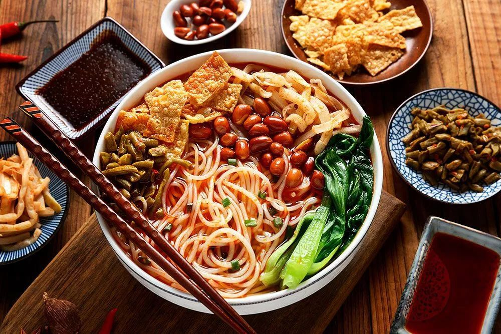
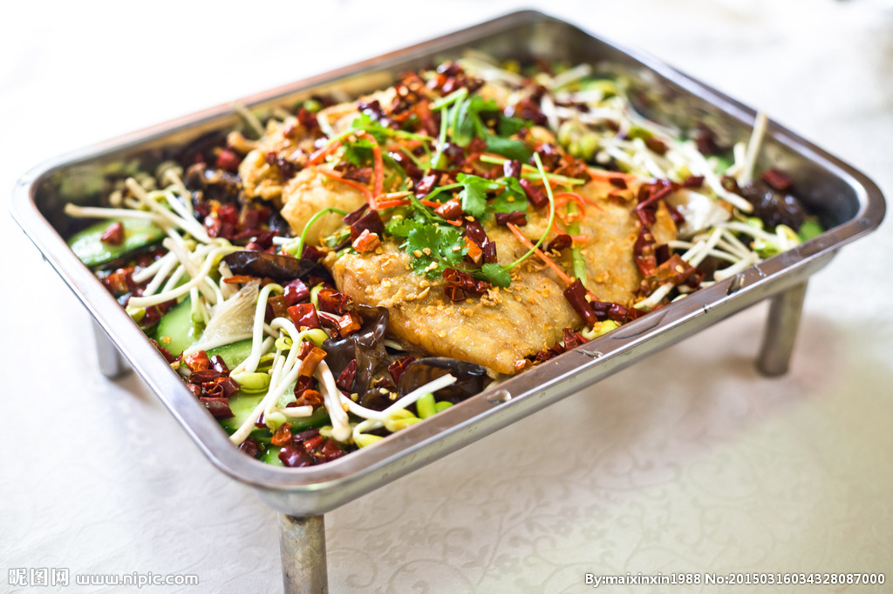

这是我，林根富，通信1901班
来自福建省，是一个性格开朗的年轻人
身份认证
我学号前一位：201916180113蒋翔海
本人：201916180114林根富
我学号后一位：201916180115程金阳
美食介绍
黄焖鸡
黄焖鸡米饭又叫香鸡煲，浓汁鸡煲饭。起源于济南名店“吉玲园”。是山东济南特色传统名菜之一。
1927年,济南府鲁菜名店"吉玲园"由于名厨云集,佳肴迭出而红极一时.各商富贾,达官显贵纷至沓来.与当时的"汇泉楼"聚丰德"并称省城三大名店.其招牌菜"百草黄焖鸡”更是深受时任山东省主席韩复榘的喜爱.他曾为此赏银三十块,并称赞说:"此鸡匠心独运,是上品之上,当为一绝”。
属于鲁菜系家常菜品，主要食材是鸡腿肉，配以青椒、香菇等焖制而成，味道美妙，具有肉质鲜美嫩滑的特点。其中以上吉铺黄焖鸡米饭和八珍黄焖鸡最为出色，入口爽滑弹牙，汤汁鲜美。
黄焖鸡有三绝：
一品汤，汤色红亮、口感滋糯、老道醇厚、油而不腻.、回味无穷；
二品肉，成品靓丽、肉质滑嫩；
三品米，香气浓郁、劲道有韧劲。
黄焖鸡的链接
螺蛳粉

螺蛳粉是广西壮族自治区柳州市的小吃米粉，
具有辣、爽、鲜、酸、烫的独特风味。是柳州最具地方特色的名小吃。
汤料由螺蛳、山奈、八角、肉桂、丁香、多种辣椒、等天然香料和味素配制而成。
螺蛳粉的链接
碳烤鱼

烤鱼（Grilled fish）。
是重庆万州一道特色美食，发源于重庆巫溪县，口味麻辣。
烤鱼的制作原料主要有鱼、蘑菇、番茄等。
它是鱼类经过烤制之后进行烹饪的一种方法，
这种烹调方式实现了“一烤二炖”。
在流传过程中，烤鱼融合腌、烤、炖三种烹饪工艺技术，
充分借鉴传统渝菜及重庆火锅用料特点，是口味奇绝、营养丰富的风味小吃。
碳烤鱼的链接
黄焖鸡做法视频